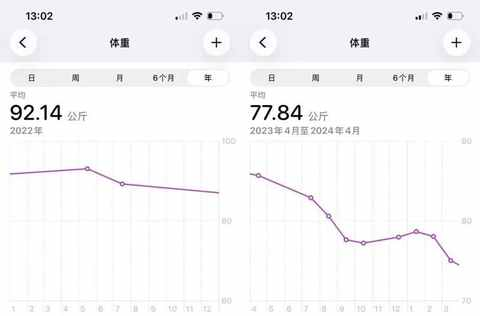
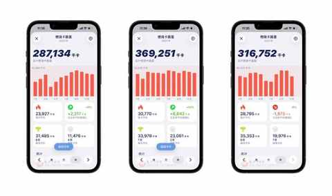
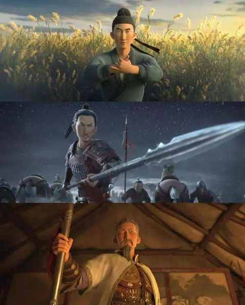
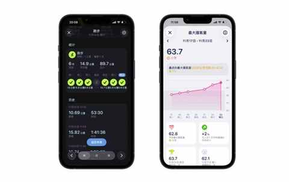

90 年，35 岁，一个普通中年人决定通过运动，保持在场！
一、运动，减肥
通过运动减肥，有一个显著的好处：在吃方面能不用太严格，大大降低在减肥前期坚持的难度。
从小学的时候开始，便有体育课，可以说自我们上学开始，我们都知道运动是重要的，但是有多重要，在感受上并不明显。
有运动的意识并不代表有行动，直到遇到一些事情，或者到某个年龄之后，想通过运动改变现状。
2023 年的年初，有一天照镜子的时候，突然有了减肥的想法，因为身高 177cm 的我，体重常年保持在 90kg 以上。
接近一年的时候，通过运动和饮食的结合，在当年顺利减掉 15kg 的体重。

中年减肥成功2年后，才发现维持体重靠的不是毅力，而是这5个微习惯
中年减肥成功2年后，才发现运动形式真不重要，守住这3点才能不反弹！
二、运动，贵在坚持
运动这个事情，必须得在坚持一段时间之后，才能有一些正反馈！
2023 年是我开始规律运动的第一年，自此，每日运动的习惯得以养成。

在 2023 年的暑期，有一部动画电影《长安三万里》上映，票房口碑双丰收，到现在依然被反复提及。
李白的肆意和洒脱，让人印象深刻，不过我更多看到的是，高适的坚定与坚持。

可谓是大器晚成的代表，近50岁时，才经张九皋推荐中有道科进入仕途，任封丘县尉，不久辞去。后得哥舒翰赏识，入河西幕府为掌书记。
在并没有养成每日运动的习惯之前，最多也就想到这一层，顺便再感叹下他的身体很好，老当益壮。
只有经常运动的人，才能更深刻地感知到，其几十年如一日的坚持和自律的不易。
只有在一个强健体魄的基础上，才能让他在机会出现的时候，能牢牢把握住！
跑步 or 骑行：一年有氧运动的个人体验与建议
从骑行转到跑步：一个中年人两年有氧运动的变化
三、运动，保持在场
一个不可否认的事实：运动的重要性，随年龄递增！
有运动习惯和没有运动习惯，两者最大差别往往并不在于具体的运动能力，而在于精力与状态是否能稳定维持在一个比较好的水平。
持续运动最大的感受：承认吧，谁还能没有约束条件！
特别是像我这样，目前处在中年危机阶段的中年人来说，保持一个稳定的状态比什么都重要，那么最应该做的事情便是通过运动调整身体状态。
一个事实：人到中年，才会不断去认识自己的身体！
等坚持到机会出现的时候，才能投入更多的时间和精力，把机会把握住。
中年人提高跑量的意外之喜：最大摄氧量首次突破62！

近期文章
小米高端化成了吗？拿15S Pro当主力机4个月，我有这5个真实感受
日更100天走到第84天，我撞上了“墙”：下笔难，写的慢，最难的时候到了！
90 年，35 岁，E区出发，即将在福州解锁首全马
嘿！还记得“为QQ等级挂机”的岁月吗？来晒晒你的等级吧！
11 个月，开极氪7X跑两万公里，用车总结及好物分享
一个长居省外中年人的合肥印象：记2025的年第4次合肥行
中年减肥成功2年后，才发现运动形式真不重要，守住这3点才能不反弹！
我的两个配图利器：两个APP强强联合，实现1+1 > 2的视觉升级
别慌！和所有Intel版Mac用户共享：3个让我们继续用的理由和2个续命秘籍
中年减肥成功2年后，才发现这5个坑当初要是有人点醒我该多好！